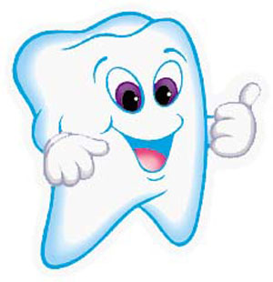

Echipa
Clinica Healthy Dent este orientata spre calitate si siguranta. Echipa clinicii este o echipa tanara, in permanent contact cu noile tehnici si tehnologii. Specialistii nostri in stomatologie, chirurgie orala, endodontie, ortodontie, chirurgie maxilo faciala si chirurgie estetica ofera servicii inegalabile.
Dotari
Dotarile de ultima ora fac din Clinica Healthy Dent un loc in care vei fi mereu uimit de tratamentele sigure si fara durere incat vei pleca mereu multumit si sanatos.
Uniturile dentare
Clinica Healthy Dent dispune de doua unituri dentare de ultima generatie, ce permit o functionare optima a aparaturii, crescand confortul pacientului in timpul interventiilor.
Apexlocatorul VDW-RAYPEX 6
Apexlocatorul este un aparat indispensabil oricarui tratament endodontic. Clinica Healthy Dent este dotata cu apexloacatoare Raypex 6 pe fiecare unit stomatologic.
Camera intraorala
Camera intraorala este un dispozitiv utilizat in cariologie indispensabil diagnosticului. Fiecare unit din Clinica Healthy Dent are in dotare in astfel de aparat.
Endomotorul VDW.SILVER
Endomotorul reciproc aflat in dotarea Clinicii Healthy Dent este un aparat utilizat in endodontie. Fiind un reductor de turatie cu scopul instrumentarii canalelor intradentare ofera maximul de eficienta la acest tip de tratament.

Fiziodispenserul NSK Surgic XT Plus
Fiziodispenserul NSK cu fibra optica este un aparat folosit in implantologie, ce ajuta medicul implantolog sa creeze situsul implantar.
Lampa albire Beyond Polus Advanced
Clinica Healthy Dent aduce in Iasi sistemul Beyond Polus Advanced, cel mai avansat echipament pentru albirea dintilor, care produce rezultate maxime si rapide, in conditii de siguranta maxima pentru parodontiul marginal si structura smaltului dentar. Timpul necesar unui tratament de albire a dintilor este de numai 20 de minute, comparativ cu alte produse mai lente. Dental Advisor – cea mai prestigioasa revista de stomatologie din SUA – a acordat note excelente produselor Beyond pentru albirea dintilor.
Obtura 3D MAX
Sistemul Obtura 3D MAX de livrare rapida de gutta percha termoplastifiata umple chiar si cea mai dificila forma de canal, asigurand o sigilare completa 3D cu rezultate eficiente si previzibile. Clinica Healthy Dent are in dotarea sa singurul sistem de livrare de gutta percha calda, care poate fi rapid si eficient incorporat cu toate tehnicile de dezambalare, asigurand o eficienta de umplere in mai putin de 60 secunde fiind cea mai eficienta tehnica de umplere in endodontia de astazi.
Sursa de caldura SybronEndo System B
Sursa de căldură oferă fiabilitate, acuratete, fiind cel mai bun sistem de condensare gutta percha disponibil. Sistemul B permite setarea temperaturii, care se mentine pe tot parcursul procedurii, timp de 12 secunde, dupa care avem un sigiliu a deltei apicale într-o singură mișcare.
Microscop ZEISS
Clinica Healthy Dent dispune de ultra performantul microscop endodontic Carl Zeiss care permite descoperirea cu acuratete a canalelor radiculare si obturarea lor sub control microscopic.
Curiozități despre dinți care te vor face să îi privești altfel
- Dentiția temporară se formează înainte de naștere şi apare în jurul vârstei de 6 luni. Totuşi, 1 din 2.000 de copii se nasc cu dinţii erupţi.
- De ce apar cariile? Ne spune istoria. Copiii din era preistorică dezvoltau carii foarte rar, pentru că zahărul era inexistent în regimul lor.
- Cea mai puternică substanţă din corpul nostru este smalţul. Este chiar mai rezistent decât oasele.
- Dacă eşti dreptaci, vei tinde să mesteci mâncarea pe partea dreaptă. Stângacii vor mesteca mai mult pe partea stângă a cavităţii bucale. Cei ambidextri nu au preferinţe.
- Dacă folosim aţa dentară în fiecare zi, într-o viaţă întreagă consumăm peste 8 km de aţă dentară.